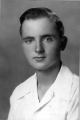
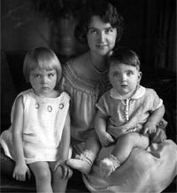
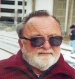

|
 |
|
|
Herbert Emil Gloor was born in Berkeley, California on November 6, 1928. He is the son of Emil Ernest Gloor and Louise Dorothea Stein. |
|
| Important Facts | |
| November 6, 1928 | Born in Berkeley, California at Alta Bates Hospital. He was the second child and the first son of Emil Ernest Gloor and his mother was Louise Dorothea Stein. |  Nancy, Herb, and Mrs. Gloor |
| Herb and his sister Nancy pose with their mother for a picture. | ||
| Herb grew up in Berkeley with his sister Nancy, in the home his father built and spent many summers working on the family farm in Walnut Creek. The family lived at 80 Oak Ridge Road, Berkeley, California until he was married in 1959. | ||
| 1930 | US Federal Census lists Emil E. Gloor (46), Louise S. (31), Nancy L. (4), and Emil H. (1), living in Berkeley, Alameda, California. | |
| 1940 | Herbert Glorr was listed in the 1940 US Census as age 11 along with his sister Nancy (age 14) and parents, Emil (56) and Louise (39), living on Oak Ridge Road, Berkeley, California. Source: Ancestry.com. 1940 United States Federal Census. Provo, UT, USA. | |
| June 10, 1944 | At age 16, Herb completed requirements at the Bentley School in Berkeley, California for admission to High School. |  80 Oak Ridge Road |
| 1945-1946 | Served in the U.S. Army in World War II. Herb was assigned to an artillery unit and trained on a 105 Howitzer towed by a Dodge Power wagon that he enthusiastically said could go anywhere. Fortunately the war ended and Herb was deployed to Japan as part of the occupying force, where he was stationed in Okinawa. While he was there he developed a great understanding and respect for the people and their traditions. |
|
| 1946 | Took the US Army Transport Republic back home from Japan to the US. | US Army Transport Republic |
| After his military service, Herb obtained an engineering degree which he put to use designing several highway bridges and retail stores in Northern California. Source: Mariposa Gazette Obituary. | ||
| August 22, 1959 |
Married Muriel Joan
Campbell in Berkeley, California.
They settled in Martinez with her four children, Lita, John, Michael and James, who Herb selflessly adopted, loved and fathered as his own. |
|
| May 28, 1960 | Joan and Herb then had two children together, Louise Zellie Gloor was born. The family was living at 1159 Arlington Way, Martinez, California. | |
| November 6, 1961 | David Emil Gloor was born. | |
| Herb was a great father and husband, taking the family on many adventurous summer camping trips and winter ski vacations. | ||
| Worked at World Savings & Loan bank in Berkeley, California. He started with World at it's inception working at many branches in northern California and ending his career at the Oakland headquarters as senior loan officer. | ||
| 1980's |
Herb retired to Mariposa with Joan in the early eighties to run the family business, The Mariposa Lodge. As a Mariposa business owner he became active in the community, working with the chamber of commerce and the Mariposa Rotary club, with several Rotary trips to Mexico helping build orphanage a highlight of his service. |
 Herb at Yosemite |
He had a lifelong love of dogs and usually had one of his many best friends at his side. |
||
| 2004 | He was an avid world traveler, visiting far away places such as the Alaska, Galapagos Islands, Africa, Europe and the Caribbean. |
|
| April 8-18, 2008 | Herb took a trip to the Galapagos Islands, presented by AVB Travel. Source: Badge he wore on the trip. | |
| 2012 | The Mariposa County Arts Council established the Joan Gloor Memorial Fund with the donation of $5000 given by Herb Gloor in memory of his wife's passion and love for the Arts. The Joan Gloor Memorial Fund is dedicated to advancing the arts through Mariposa youth. | |
| Dec. 9, 2014 | Herb died at a rehabilitation facility near his home in Mariposa. |

Last updated: August 11, 2026